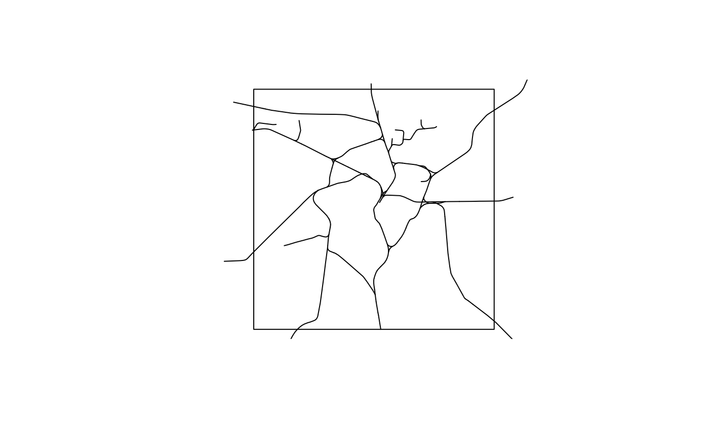

Digital landscape model (DLM)
bkg_dlm.RdRetrieve objects from the digital landscape model (DLM). DLMs are a description of topographical objects of a landscape. Many other services from the BKG are derived from the DLM.
Although this function lets you download each feature type in the DLM, you still need to know about what data is available and what the features in the output actually mean. Since the DLM gets pretty complicated, you are advised to take a look at the GeoInfoDok object type catalog.
This function interfaces the dlm* products of the BKG.
Arguments
- type
Feature type of the DLM. Can either be the identifier (e.g., 41010) or its description (e.g., Siedlungsflaeche). The description can either be prefixed with
AX_or not. Providing an identifier directly is generally faster as the description needs to be matched by requesting theGetCapabilitiesendpoint of the service.Note that not all feature types are available for all shapes (see the
shapeargument). To see all available feature types, you can runbkg_feature_types("dlm250")orbkg_feature_types("dlm1000").- ...
Used to construct CQL filters. Dot arguments accept an R-like syntax that is converted to CQL queries internally. These queries basically consist of a property name on the left, an aribtrary vector on the right, and an operator that links both sides. If multiple queries are provided, they will be chained with
AND. The following operators and their respective equivalents in CQL and XML are supported:R CQL XML ===PropertyIsEqualTo!=<>PropertyIsNotEqualTo<<PropertyIsLessThan>>PropertyIsGreaterThan>=>=PropertyIsGreaterThanOrEqualTo<=<=PropertyIsLessThanOrEqualTo%LIKE%LIKEPropertyIsLike%ILIKE%ILIKE%in%INPropertyIsEqualToandOrTo construct more complex queries, you can use the
filterargument to pass CQL queries directly. Also note that you can switch between CQL and XML queries usingoptions(ffm_query_language = "xml"). See alsowfs_filter.- shape
Geometry type of the feature type. Must be one of
"point","line", or"polygon". Defaults to"point". Not all shapes are available for all feature types.- scale
Scale of the geometries. Can be
"250"(1:250,000) or"1000"(1:1,000,000). Defaults to"250".- bbox
An sf geometry or a boundary box vector of the format
c(xmin, ymin, xmax, ymax). Used as a geometric filter to include only those geometries that relate tobboxaccording to the predicate specified inpredicate. If an sf geometry is provided, coordinates are automatically transformed to ESPG:25832 (the default CRS), otherwise they are expected to be in EPSG:25832.- poly
An sf geometry. Used as a geometric filter to include only those geometries that relate to
polyaccording to the predicate specified inpredicate. Coordinates are automatically transformed to ESPG:25832 (the default CRS).- predicate
A spatial predicate that is used to relate the output geometries with the object specified in
bboxorpoly. For example, ifpredicate = "within", andbboxis specified, returns only those geometries that lie withinbbox. Can be one of"equals","disjoint","intersects","touches","crosses","within","contains","overlaps","relate","dwithin", or"beyond". Defaults to"intersects".- filter
A character string containing a valid CQL or XML filter. This string is appended to the query constructed through
.... Use this argument to construct more complex filters. Defaults toNULL.- epsg
An EPSG code specifying a coordinate reference system of the output. If you're unsure what this means, try running
sf::st_crs(...)$epsgon a spatial object that you are working with. Defaults to 3035.- properties
Vector of columns to include in the output.
- max
Maximum number of results to return.
Value
An sf tibble with the geometry suggested by shape.
The columns can vary depending of the selected feature type. The meanings
of the columns can also change depending on the feature type. Check out
the GeoInfoDok object type catalog for a detailed documentation of the
DLM metadata. Some more general columns are included for all feature types;
these include:
id: Identifier of an objectland: ISO-2 code of the country, usually DEmodellart: Model typeobjart: Feature type of the digital landscape model (DLM)objart_txt: Title of the feature typeobjid: Unique object identifierbeginn: Creation of the object in the DLMende: Deletion of the object from the DLMobjart_z: Object type of the composite object (ZUSO)objid_z: Object type of the composite object (ZUSO)
Query language
By default, WFS requests use CQL (Contextual Query Language) queries for
simplicity. CQL queries only work together with GET requests. This means
that when the URL is longer than 2048 characters, they fail.
While POST requests are much more flexible and able to accommodate long
queries, XML is really a pain to work with and I'm not confident in my
approach to construct XML queries. You can control whether to send GET or
POST requests by setting options(ffm_query_language = "XML")
or options(ffm_query_language = "CQL").
Examples
# Retrieve all train tracks in Leipzig
library(sf)
lzg <- st_sfc(st_point(c(12.37475, 51.340333)), crs = 4326)
lzg <- st_buffer(st_transform(lzg, 3035), dist = 10000, endCapStyle = "SQUARE")
tracks <- bkg_dlm("Bahnstrecke", shape = "line", poly = lzg)
tracks
#> Simple feature collection with 167 features and 19 fields
#> Geometry type: MULTILINESTRING
#> Dimension: XY
#> Bounding box: xmin: 4473996 ymin: 3122064 xmax: 4502816 ymax: 3151592
#> Projected CRS: ETRS89-extended / LAEA Europe
#> # A tibble: 167 × 20
#> id land modellart objart objart_txt objid hdu_x beginn ende
#> <chr> <chr> <chr> <chr> <chr> <chr> <int> <dttm> <chr>
#> 1 obja… DE DLM250 42014 AX_Bahnst… DEBK… 0 2024-12-31 08:00:00 NA
#> 2 obja… DE DLM250 42014 AX_Bahnst… DEBK… 1 2024-12-31 08:00:00 NA
#> 3 obja… DE DLM250 42014 AX_Bahnst… DEBK… 1 2024-12-31 08:00:00 NA
#> 4 obja… DE DLM250 42014 AX_Bahnst… DEBK… 1 2024-12-31 08:00:00 NA
#> 5 obja… DE DLM250 42014 AX_Bahnst… DEBK… 0 2024-12-31 08:00:00 NA
#> 6 obja… DE DLM250 42014 AX_Bahnst… DEBK… 0 2024-12-31 08:00:00 NA
#> 7 obja… DE DLM250 42014 AX_Bahnst… DEBK… 0 2024-12-31 08:00:00 NA
#> 8 obja… DE DLM250 42014 AX_Bahnst… DEBK… 0 2024-12-31 08:00:00 NA
#> 9 obja… DE DLM250 42014 AX_Bahnst… DEBK… 0 2024-12-31 08:00:00 NA
#> 10 obja… DE DLM250 42014 AX_Bahnst… DEBK… 1 2024-12-31 08:00:00 NA
#> # ℹ 157 more rows
#> # ℹ 11 more variables: bkt <chr>, elk <chr>, gls <chr>, nam <chr>, nrb <chr>,
#> # spw <chr>, vkd <chr>, znm <chr>, zus <chr>, bemerkung <chr>,
#> # geometry <MULTILINESTRING [m]>
plot(lzg)
plot(tracks$geometry, add = TRUE)

# Filter all tracks that are not rail cargo
bkg_dlm("Bahnstrecke", shape = "line", poly = lzg, bkt == "1102")
#> Simple feature collection with 30 features and 19 fields
#> Geometry type: MULTILINESTRING
#> Dimension: XY
#> Bounding box: xmin: 4476343 ymin: 3135590 xmax: 4491708 ymax: 3147484
#> Projected CRS: ETRS89-extended / LAEA Europe
#> # A tibble: 30 × 20
#> id land modellart objart objart_txt objid hdu_x beginn ende
#> <chr> <chr> <chr> <chr> <chr> <chr> <int> <dttm> <chr>
#> 1 obja… DE DLM250 42014 AX_Bahnst… DEBK… 0 2024-12-31 08:00:00 NA
#> 2 obja… DE DLM250 42014 AX_Bahnst… DEBK… 1 2024-12-31 08:00:00 NA
#> 3 obja… DE DLM250 42014 AX_Bahnst… DEBK… 0 2024-12-31 08:00:00 NA
#> 4 obja… DE DLM250 42014 AX_Bahnst… DEBK… 0 2024-12-31 08:00:00 NA
#> 5 obja… DE DLM250 42014 AX_Bahnst… DEBK… 0 2024-12-31 08:00:00 NA
#> 6 obja… DE DLM250 42014 AX_Bahnst… DEBK… 0 2024-12-31 08:00:00 NA
#> 7 obja… DE DLM250 42014 AX_Bahnst… DEBK… 0 2024-12-31 08:00:00 NA
#> 8 obja… DE DLM250 42014 AX_Bahnst… DEBK… 0 2024-12-31 08:00:00 NA
#> 9 obja… DE DLM250 42014 AX_Bahnst… DEBK… 0 2024-12-31 08:00:00 NA
#> 10 obja… DE DLM250 42014 AX_Bahnst… DEBK… 1 2024-12-31 08:00:00 NA
#> # ℹ 20 more rows
#> # ℹ 11 more variables: bkt <chr>, elk <chr>, gls <chr>, nam <chr>, nrb <chr>,
#> # spw <chr>, vkd <chr>, znm <chr>, zus <chr>, bemerkung <chr>,
#> # geometry <MULTILINESTRING [m]>
# Directly providing the identifier is faster
bkg_dlm("42014", shape = "line", poly = lzg)
#> Simple feature collection with 167 features and 19 fields
#> Geometry type: MULTILINESTRING
#> Dimension: XY
#> Bounding box: xmin: 4473996 ymin: 3122064 xmax: 4502816 ymax: 3151592
#> Projected CRS: ETRS89-extended / LAEA Europe
#> # A tibble: 167 × 20
#> id land modellart objart objart_txt objid hdu_x beginn ende
#> <chr> <chr> <chr> <chr> <chr> <chr> <int> <dttm> <chr>
#> 1 obja… DE DLM250 42014 AX_Bahnst… DEBK… 0 2024-12-31 08:00:00 NA
#> 2 obja… DE DLM250 42014 AX_Bahnst… DEBK… 1 2024-12-31 08:00:00 NA
#> 3 obja… DE DLM250 42014 AX_Bahnst… DEBK… 1 2024-12-31 08:00:00 NA
#> 4 obja… DE DLM250 42014 AX_Bahnst… DEBK… 1 2024-12-31 08:00:00 NA
#> 5 obja… DE DLM250 42014 AX_Bahnst… DEBK… 0 2024-12-31 08:00:00 NA
#> 6 obja… DE DLM250 42014 AX_Bahnst… DEBK… 0 2024-12-31 08:00:00 NA
#> 7 obja… DE DLM250 42014 AX_Bahnst… DEBK… 0 2024-12-31 08:00:00 NA
#> 8 obja… DE DLM250 42014 AX_Bahnst… DEBK… 0 2024-12-31 08:00:00 NA
#> 9 obja… DE DLM250 42014 AX_Bahnst… DEBK… 0 2024-12-31 08:00:00 NA
#> 10 obja… DE DLM250 42014 AX_Bahnst… DEBK… 1 2024-12-31 08:00:00 NA
#> # ℹ 157 more rows
#> # ℹ 11 more variables: bkt <chr>, elk <chr>, gls <chr>, nam <chr>, nrb <chr>,
#> # spw <chr>, vkd <chr>, znm <chr>, zus <chr>, bemerkung <chr>,
#> # geometry <MULTILINESTRING [m]>